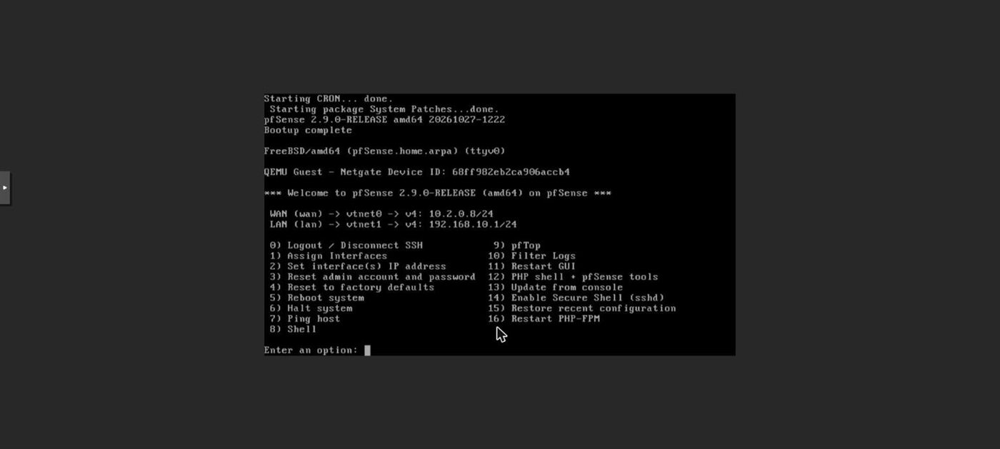
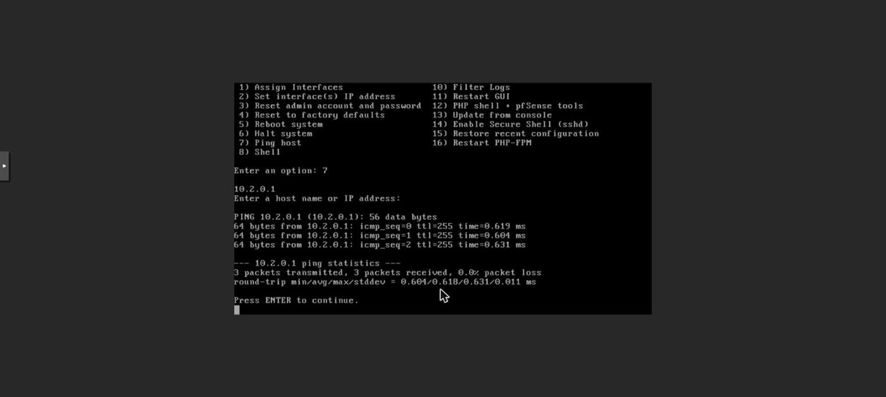
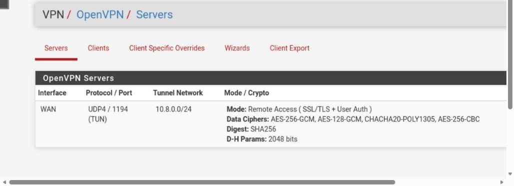
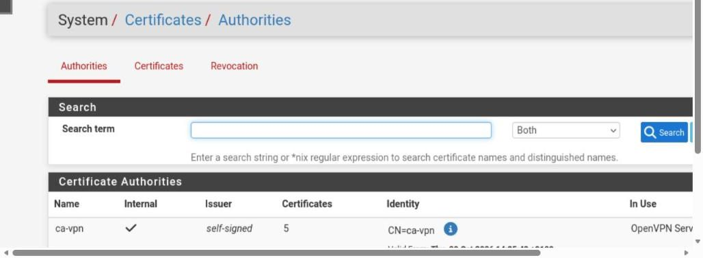
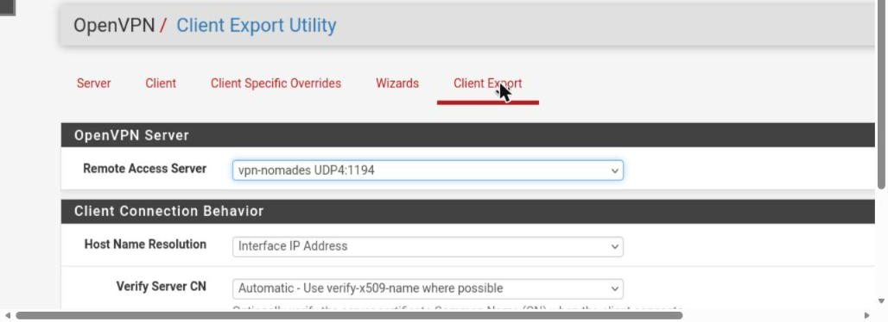
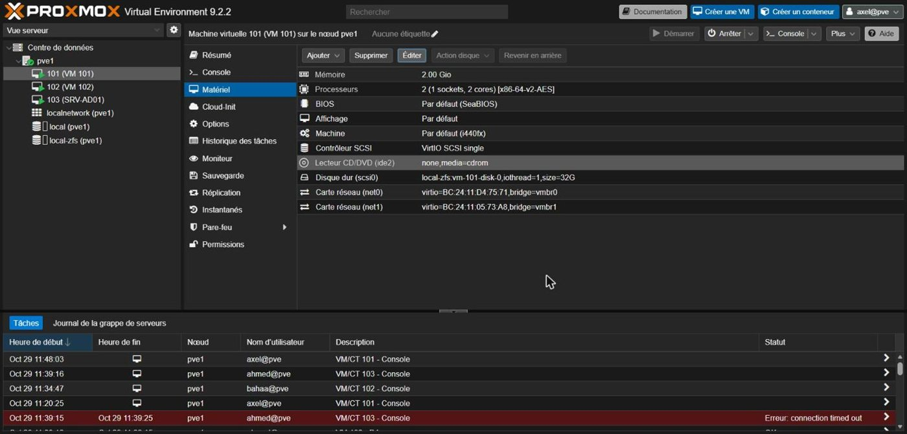
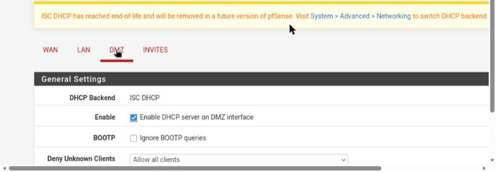
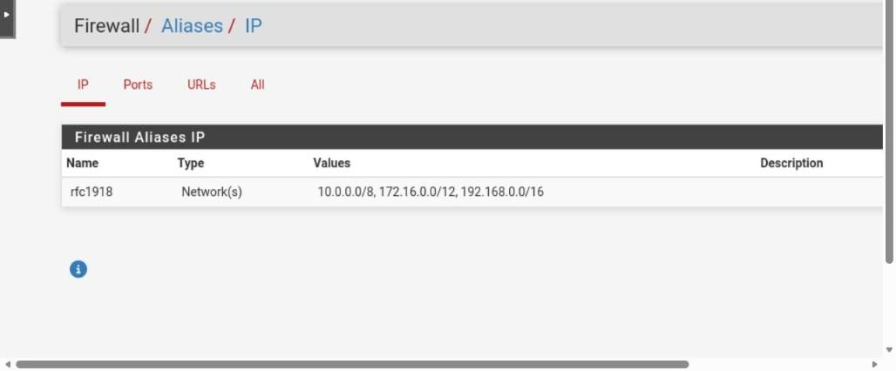
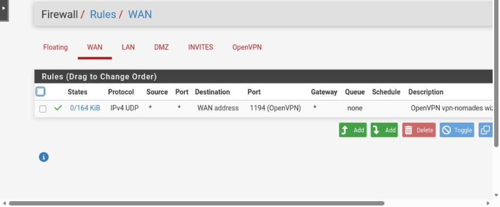
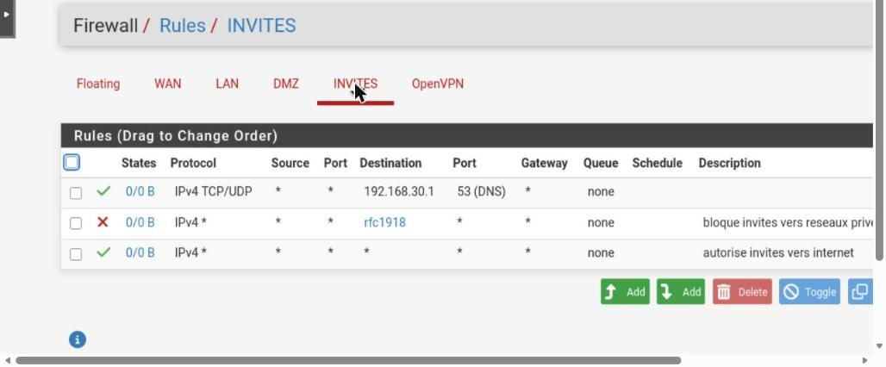

Contexte et objectif
Une organisation a besoin de séparer ses réseaux : les postes internes (LAN), les serveurs exposés (DMZ) et le Wi-Fi des visiteurs (Invités) ne doivent pas pouvoir communiquer entre eux. Les salariés en déplacement doivent aussi pouvoir joindre le réseau interne de façon chiffrée.
J'ai déployé pfSense CE 2.9.0 dans la VM 101 du nœud Proxmox pve1, puis je l'ai configuré depuis une VM cliente Debian 13 (VM 104) par l'interface web.

Architecture réseau
Cliquez sur une zone pour voir son adressage et ses règles de filtrage.
WAN : réseau de l'école
Interface vtnet0 sur le pont vmbr0, en adresse fixe 10.2.0.8/24, passerelle 10.2.0.1, DNS 1.1.1.1. Seul le port UDP 1194 (OpenVPN) est ouvert en entrée. Tout le reste est bloqué par défaut.
pfSense : le point central
VM 101 : 2 cœurs, 2 Gio de RAM, disque de 32 Go en ZFS. Deux cartes VirtIO : net0 vers le WAN (vmbr0) et net1 vers les réseaux internes (vmbr1). L'interface web n'est joignable que depuis le LAN, sur https://192.168.10.1.
LAN : postes internes
192.168.10.1/24, DHCP de .100 à .199. Le LAN garde un accès complet, car c'est la zone de confiance d'où l'on administre.
DMZ : serveurs exposés (VLAN 20)
| # | Action | Destination | Rôle |
|---|---|---|---|
| 1 | Autoriser | 192.168.20.1:53 | DNS vers sa passerelle |
| 2 | Bloquer | rfc1918 | Aucun accès aux réseaux privés |
| 3 | Autoriser | tout | Accès à Internet |
INVITES : Wi-Fi visiteurs (VLAN 30)
| # | Action | Destination | Rôle |
|---|---|---|---|
| 1 | Autoriser | 192.168.30.1:53 | DNS vers sa passerelle |
| 2 | Bloquer | rfc1918 | Isolé du LAN et de la DMZ |
| 3 | Autoriser | tout | Internet uniquement |
OpenVPN : salariés nomades
Serveur vpn-nomades, UDP 1194 sur le WAN, tunnel 10.8.0.0/24, accès au réseau local 192.168.10.0/24. Authentification double : certificat client et identifiant/mot de passe.
Installation pas à pas
- Préparer la VM dans Proxmox2 cœurs, 2 Gio de RAM, 32 Go de disque, ISO de l'installateur Netgate. Ajout d'une 2e carte réseau VirtIO sur
vmbr1pour le LAN. - Affecter les interfaces
vtnet0→ WAN,vtnet1→ LAN. Le LAN passe de192.168.1.1/24à192.168.10.1/24pour ne pas chevaucher le WAN. - Passer le WAN en adresse fixeLe DHCP du WAN ne donnait pas d'accès Internet : adresse
10.2.0.8/24, passerelle10.2.0.1, DNS1.1.1.1. - Installer pfSense CEVersion gratuite (CE) 2.9.0, système de fichiers ZFS sur un seul disque.
- VérifierDémarrage sur le disque, menu console avec les bonnes adresses, ping de la passerelle et de
1.1.1.1: 3 réponses sur 3. - Configurer depuis l'interface webVLAN DMZ et INVITES, DHCP par zone, alias, règles, serveur VPN, certificats et export des profils clients.


Règles de pare-feu
J'ai créé un alias rfc1918 qui regroupe tous les réseaux privés. Sur chaque zone isolée, l'ordre des règles est important, car pfSense applique la première qui correspond :
10.0.0.0/8 172.16.0.0/12 192.168.0.0/16
- Autoriser le DNS vers la passerelle de la zone (sinon plus aucune résolution de noms).
- Bloquer
rfc1918: la zone ne peut atteindre aucun autre réseau interne. - Autoriser le reste : il ne reste donc que l'accès à Internet.

Serveur OpenVPN d'accès distant
J'ai d'abord créé une autorité de certification (ca-vpn) et le certificat du serveur (srv-vpn) dans le Cert. Manager, puis le serveur :
# Mode et authentification Mode : Remote Access (SSL/TLS + User Auth) Protocole/port : UDP4 / 1194 sur WAN # Réseaux Tunnel : 10.8.0.0/24 Réseau local : 192.168.10.0/24 # Cryptographie CA / certificat : ca-vpn / srv-vpn Chiffrements : AES-256-GCM, AES-128-GCM, CHACHA20-POLY1305 Digest : SHA256 Diffie-Hellman : 2048 bits
Le paquet openvpn-client-export génère ensuite un fichier .ovpn par utilisateur, à importer dans OpenVPN Connect. Quatre comptes ont été créés.



Problèmes rencontrés et solutions
net1 (VirtIO) sur le pont vmbr1 dans Proxmox, puis redémarrage de la VM.10.2.0.8/24 avec passerelle et DNS renseignés à la main.reboot échouait.Autres captures





Bilan
Compétences mobilisées
- Virtualisation : création et dépannage d'une VM Proxmox
- Plan d'adressage et segmentation en VLAN
- Filtrage : ordre des règles, alias, moindre privilège
- VPN et PKI : autorité de certification, certificats, authentification double
- Documentation : compte-rendu avec plus de 100 captures
Ce que j'en retiens
- Un plan d'adressage sans chevauchement évite la moitié des pannes.
- Sur un pare-feu, l'ordre des règles compte autant que les règles elles-mêmes.
- Un VPN dépend aussi du réseau en amont (redirection de port).
Prochaines étapes : changer le mot de passe administrateur par défaut, obtenir la redirection de port et faire une capture « VPN connecté » depuis l'extérieur.